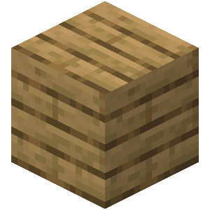
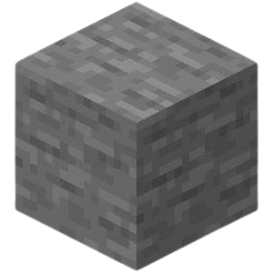
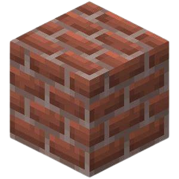
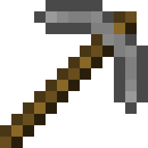
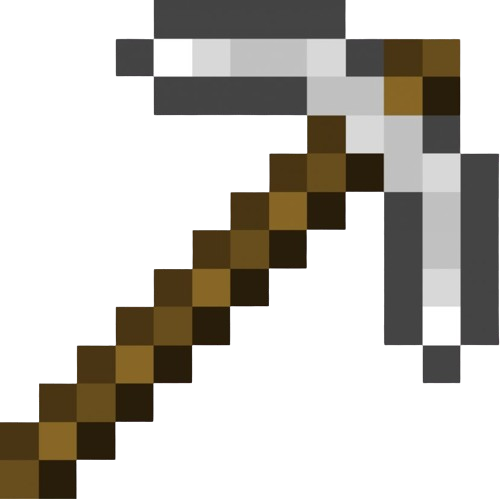
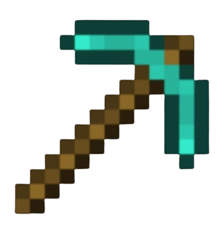
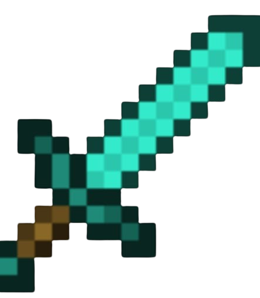
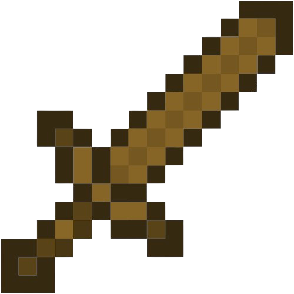
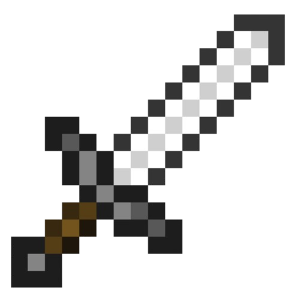
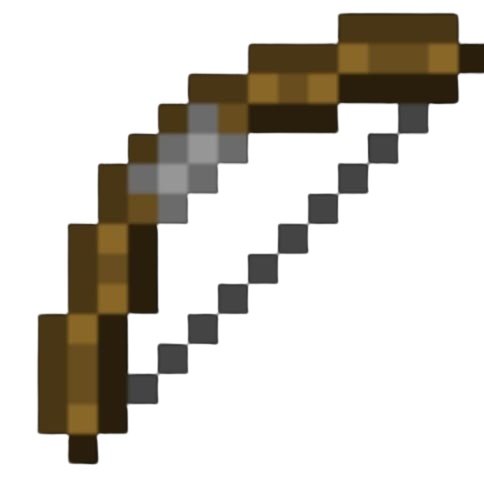

Building Blocks
| Item | Description | Image | Recipe |
|---|---|---|---|
| Wooden Plank | Essential building block used in many crafting recipes. |  | Obtain wooden logs from trees and place them in the crafting interface to get wooden planks. |
| Stone | Common building block obtained from mining stone blocks with a pickaxe. |  | Mine stone blocks with a pickaxe. |
| Brick | Building block crafted from clay bricks. |  | Smelt clay in a furnace to create bricks, then combine four bricks in a 2x2 square in the crafting interface. |
| Glass | Transparent block used for windows and decoration. | Smelt sand in a furnace to create glass blocks. | |
| Stone Brick | Durable building block crafted from stone. |  |
Combine four stone blocks in a 2x2 square in the crafting interface. |
| Sandstone | Building block made from sand. |  |
Combine four sand blocks in a 2x2 square in the crafting interface. |
| Quartz Block | Decorative block made from nether quartz. |  |
Combine four nether quartz in a 2x2 square in the crafting interface. |
| Concrete | Colorful building block made from concrete powder and water. |  |
Combine four sand, four gravel, and a dye to create concrete powder, then place it in water to harden it into concrete. |
| Terracotta | Decorative block made from clay. |  |
Smelt clay blocks in a furnace to create terracotta, which can then be dyed. |
| Obsidian | Strong building block resistant to explosions. |  |
Mine obsidian with a diamond or netherite pickaxe. |
Tools
| Item | Description | Image | Recipe |
|---|---|---|---|
| Wooden Pickaxe | Used to mine stone and ores. |  |
Combine three wooden planks and two sticks in the crafting interface to create a wooden pickaxe. |
| Stone Pickaxe | Used to mine iron and other ores. |  | Combine three cobblestones and two sticks in the crafting interface to create a stone pickaxe. |
| Iron Pickaxe | Used to mine diamond and other ores. |  | Combine three iron ingots and two sticks in the crafting interface to create an iron pickaxe. |
| Diamond Pickaxe | Used to mine obsidian and other hard blocks. |  | Combine three diamonds and two sticks in the crafting interface to create a diamond pickaxe. |
| Gold Pickaxe | Fast but low-durability pickaxe. |  |
Combine three gold ingots and two sticks in the crafting interface to create a gold pickaxe. |
| Netherite Pickaxe | Strongest pickaxe with high durability. |  |
Combine a diamond pickaxe with a netherite ingot in the smithing table. |
| Wooden Shovel | Used to dig dirt, sand, and gravel. |  |
Combine a wooden plank and two sticks in the crafting interface to create a wooden shovel. |
| Iron Shovel | Used to dig dirt, sand, and gravel quickly. |  |
Combine an iron ingot and two sticks in the crafting interface to create an iron shovel. |
| Diamond Shovel | Durable shovel used to dig dirt, sand, and gravel. |  |
Combine a diamond and two sticks in the crafting interface to create a diamond shovel. |
| Netherite Shovel | Strongest shovel with high durability. |  |
Combine a diamond shovel with a netherite ingot in the smithing table. |
Weapons
| Item | Description | Image | Recipe |
|---|---|---|---|
| Diamond Sword | A powerful weapon used to deal high damage to mobs and players. |  | Combine two diamonds and a stick in the crafting interface to create a diamond sword. |
| Wooden Sword | Basic weapon used for melee combat. |  | Combine two wooden planks and a stick in the crafting interface to create a wooden sword. |
| Stone Sword | Better durability than wooden sword. |  |
Combine two cobblestones and a stick in the crafting interface to create a stone sword. |
| Iron Sword | Used to deal moderate damage to mobs and players. |  | Combine two iron ingots and a stick in the crafting interface to create an iron sword. |
| Gold Sword | Fast but low-durability sword. |  |
Combine two gold ingots and a stick in the crafting interface to create a gold sword. |
| Netherite Sword | Strongest sword with high durability. |  |
Combine a diamond sword with a netherite ingot in the smithing table. |
| Bow | Ranged weapon used to shoot arrows. |  | Combine three sticks and three strings in the crafting interface to create a bow. |
| Crossbow | Ranged weapon with longer loading time but higher damage. |  |
Combine three sticks, two strings, an iron ingot, and a tripwire hook in the crafting interface to create a crossbow. |
| Arrow | Ammunition for bows and crossbows. |  |
Combine a flint, a stick, and a feather in the crafting interface to create four arrows. |
| Shield | Defensive item used to block attacks. |  |
Combine six wooden planks and an iron ingot in the crafting interface to create a shield. |
Food
| Item | Description | Image | Recipe |
|---|---|---|---|
| Bread | Restores hunger points. |  |
Combine three wheat in a horizontal row in the crafting interface to create bread. |
| Apple | Can be found in oak tree leaves. |  |
Harvest from oak tree leaves or find in chests. |
| Cooked Porkchop | Restores more hunger points than raw porkchop. |  |
Cook raw porkchop in a furnace, smoker, or campfire. |
| Golden Apple | Provides additional effects like regeneration. |  |
Combine an apple with eight gold ingots in the crafting interface to create a golden apple. |
| Cooked Beef | Restores more hunger points than raw beef. |  |
Cook raw beef in a furnace, smoker, or campfire. |
| Pumpkin Pie | Sweet food item that restores hunger points. |  |
Combine pumpkin, sugar, and an egg in the crafting interface to create pumpkin pie. |
| Cookie | Restores a small amount of hunger points. |  |
Combine wheat and cocoa beans in the crafting interface to create cookies. |
| Cooked Chicken | Restores more hunger points than raw chicken. |  |
Cook raw chicken in a furnace, smoker, or campfire. |
| Golden Carrot | Used in brewing and restores a significant amount of hunger points. |  |
Combine a carrot with eight gold nuggets in the crafting interface to create a golden carrot. |
| Mushroom Stew | Restores a significant amount of hunger points. |  |
Combine a bowl with a red mushroom and a brown mushroom in the crafting interface to create mushroom stew. |
Armor
| Item | Description | Image | Recipe |
|---|---|---|---|
| Leather Helmet | Provides basic head protection. |  |
Combine five leather in the crafting interface to create a leather helmet. |
| Iron Helmet | Provides moderate head protection. | Combine five iron ingots in the crafting interface to create an iron helmet. | |
| Diamond Helmet | Provides high head protection. | Combine five diamonds in the crafting interface to create a diamond helmet. | |
| Gold Helmet | Provides head protection but with low durability. |  |
Combine five gold ingots in the crafting interface to create a gold helmet. |
| Netherite Helmet | Strongest helmet with high durability. |  |
Combine a diamond helmet with a netherite ingot in the smithing table. |
| Leather Chestplate | Provides basic body protection. |  |
Combine eight leather in the crafting interface to create a leather chestplate. |
| Iron Chestplate | Provides moderate body protection. |  |
Combine eight iron ingots in the crafting interface to create an iron chestplate. |
| Diamond Chestplate | Provides high body protection. |  |
Combine eight diamonds in the crafting interface to create a diamond chestplate. |
| Gold Chestplate | Provides body protection but with low durability. |  |
Combine eight gold ingots in the crafting interface to create a gold chestplate. |
| Netherite Chestplate | Strongest chestplate with high durability. |  |
Combine a diamond chestplate with a netherite ingot in the smithing table. |